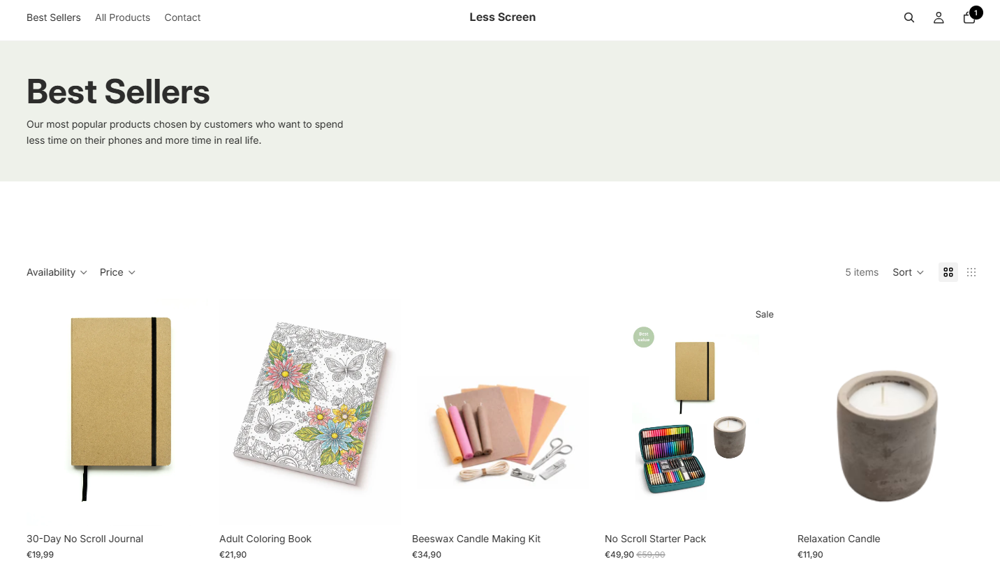
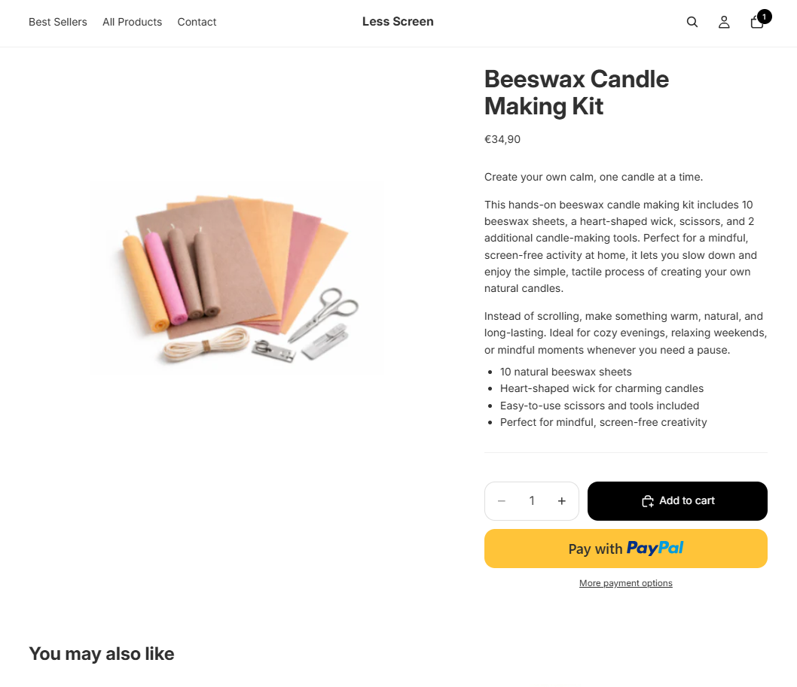

Less Screen - verkkokauppa
Kuvaus
Suunnittelin ja toteutin Shopify-pohjaisen verkkokaupan “less screen” -konseptilla, jonka tavoitteena on kannustaa vähentämään ruutuaikaa ja lisäämään läsnäoloa arjessa. Verkkokauppa keskittyy tuotteisiin, jotka tukevat analogista tekemistä, kuten piirtämistä, kirjoittamista ja käsitöitä.
Projekti sisälsi kokonaisvaltaisen brändin suunnittelun, visuaalisen ilmeen rakentamisen sekä Shopify-teeman muokkauksen. Lopputuloksena syntyi rauhallinen ja selkeä verkkokauppa, jossa käyttökokemus tukee konseptin ydinsanomaa.
Keskeiset ominaisuudet
- Shopify-verkkokauppa analogista tekemistä tukeville tuotteille
- Selkeä ja rauhallinen käyttöliittymä, joka ohjaa keskittymään sisältöön
- Responsiivinen toteutus mobiilille ja desktopille
- Yhtenäinen ja harkittu brändi-ilme koko sivustolla
- Teeman muokkaus vastaamaan konseptin visuaalista linjaa
Opitut asiat
Projekti syvensi osaamistani Shopify-kehityksessä sekä teemojen räätälöinnissä. Kehitin taitojani erityisesti brändilähtöisessä suunnittelussa ja visuaalisen identiteetin rakentamisessa. Opin myös, miten käyttöliittymän visuaaliset valinnat voivat tukea konseptia ja vaikuttaa käyttäjän kokemukseen.
Teknologiat
Shopify, HTML, CSS, Canva


